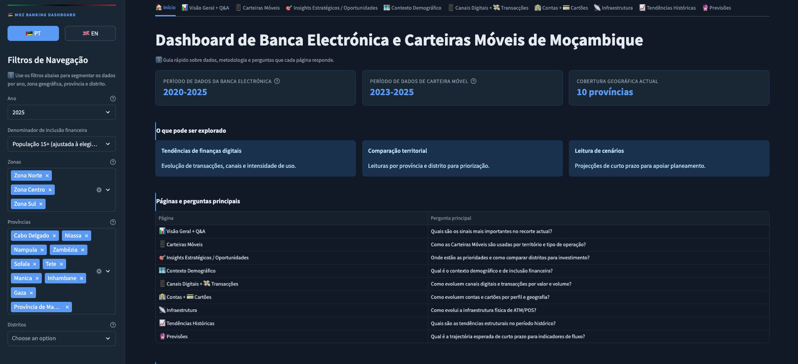

Análise de inclusão financeira em 10 províncias e 154 distritos. Dados oficiais do Banco de Moçambique, 2020–2025. Interactivo, nível distrital, bilingue.

Add screenshot_pt.png and screenshot_en.png to the landing/ folderGráficos interactivos · Filtros por província e distrito · Modelação de cenários
Três domínios de dados, uma visão integrada
Desenhado para rigor analítico
Stack de dados Python open-source
Gráficos interactivos, interface bilingue e modelação de cenários.
Sem instalação necessária.